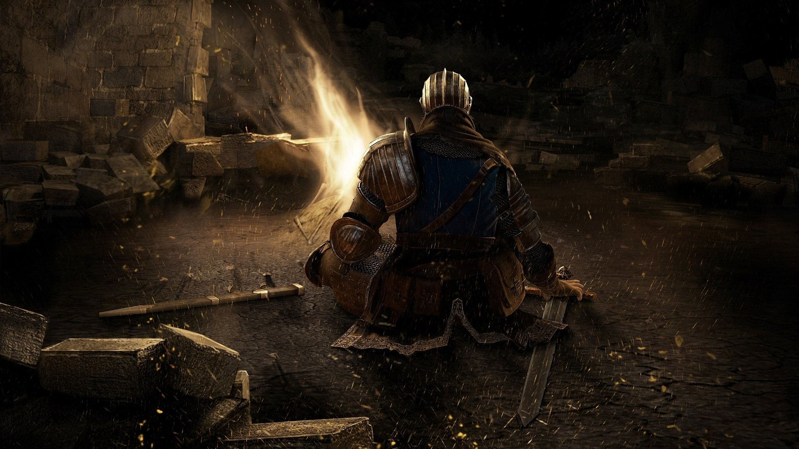

Popularidad de un Souls
- La tan debatida dificultad es una consecuencia de su fama - 3Djuegos
- El mejor juego del 2011 - Areajugones
- Tiene madera de uno de los mejores juegos de la década - Vandal
- Tiene uno de los mejores apartados gráficos generacionales.
- Posee una jugabilidad bien adaptada.